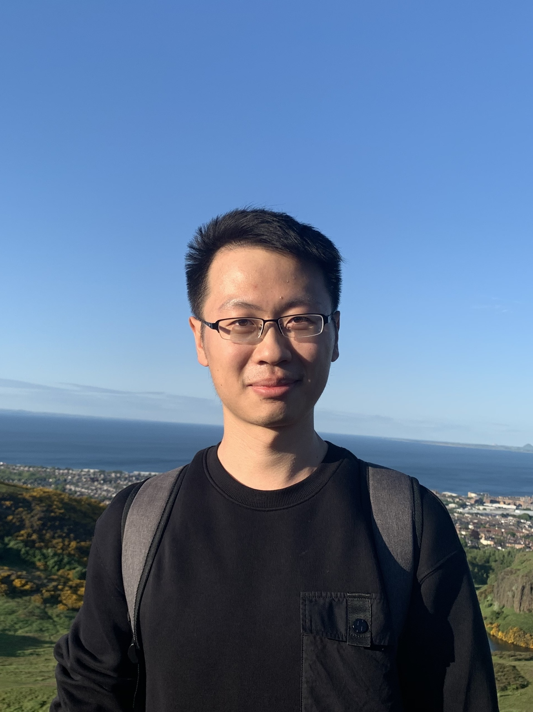

Yunfan Huang 黄云帆
Ph.D.
Personal CV [in English]
Department of Engineering Mechanics
Tsinghua University
Beijing 100084, China
E-mail: yf-huang19@tsinghua.org.cn
Education
- Ph.D. (2019-2025)
- Department of Engineering Mechanics, Tsinghua University
- Supervisor: Prof. Moran Wang
- Dissertation: Electrokinetic transport mechanisms of immiscible liquid-liquid interface (Main)
- B.E. (2015-2019)
- Department of Engineering Mechanics (Tsien Excellence in Engineering Program), Tsinghua University
- Supervisor: Prof. Moran Wang
- Thesis: Electron hydrodynamics in micro-/nano-scale low-dimensional materials (Main, Supp)
Experiences
- Fall 2021-2023: Teaching Assistant
- Heat and Mass Transfer (Prof. M. Wang), Tsinghua University
- Fall 2018: Visiting Student
- School of Mechanical Engineering (Prof. S.T. Wereley), Purdue University
- July 2018: Programme Participant
- Airbus Airnovation Summer Academy (1/40), Cranfield University
Research Interests
- Physicochemical hydrodynamics at micro-/nano-scale (e.g., electrokinetic transport)
- Quantum hydrodynamics in solids (e.g., electron, phonon)
- Kinetic modeling and multiscale simulation of multiphysical transport
Portfolio
- General physical picture
- Complex hydrodynamics: From single paradigms to X-paradigm [en]
- Academic figures
- Lars Onsager: A lifetime of symmetry & structure [en]
- Heuristic introductions
- Historical overview of osmotic pressure [zh-cn]
- Electrokinetics of two-liquid interface [zh-cn]
Honors and Awards
- 2025.06 Outstanding graduate of Beijing (Ph.D.)
- 2021.12 Tsinghua comprehensive excellence scholarship (1st Prize)
- 2019.07 Tsinghua "Future Scholar" scholarship
- 2019.07 Bachelor's thesis with honor
- 2019.07 Outstanding graduate of Tsinghua University (B.E.)
- 2016.10 National scholarship
Publications
Review papers
- Y.F. Huang, Z.G. Tian, H.Y. Chen, W. Liu and M. Wang*. Electrokinetic transport in saturated and unsaturated porous media: A pore-scale view. Advances in Colloid and Interface Science, In Press, 2025.
- Y.F. Huang and M. Wang*. Electrokinetic multiphase hydrodynamics. Applied Physics Reviews. 12: 031322, 2025.
- Y.F. Huang and M. Wang*. Electrokinetics at liquid-liquid interfaces: Physical models and transport mechanisms. Advances in Colloid and Interface Science. 342: 103518, 2025.
- Y.F. Huang and M. Wang*. Electrokinetic multiphase hydrodynamics: Mechanisms and applications. Chinese Journal of Theoretical and Applied Mechanics, 57: 2680, 2025. [in Chinese]
- B. Liu, Y.F. Huang, M. Wang*. Physics and modeling of phonon wave behaviors in nanoscale heat conduction. Chinese Journal of Computational Physics, 41: 746, 2024 [in Chinese]
Research papers ((co-)first author)
- Y.F. Huang and M. Wang*. Electrokinetic transport regulation at liquid-infused surface by liquid depletion and ion partition. Physical Review Fluids, 2025. (in revision)
- Y.F. Huang and M. Wang*. Electrophoresis of charged dielectric droplet with ion concentration polarization effect. Physical Review Fluids, 2025. (in revision)
- Y.F. Huang and M. Wang*. Solvent mixing and ion partitioning effects in spontaneous charging and electrokinetic flow of immiscible liquid-liquid interface. Physical Review Fluids, 9: 103701, 2024 (Editors' Suggestion)
- A. Alizadeh#, Y.F. Huang#, F.L. Liu, H. Daiguji, M. Wang*. A streaming-potential-based microfluidic measurement of surface charge at immiscible liquid-liquid interface. International Journal of Mechanical Sciences, 247: 108200, 2023
- X. Ran#, Y.F. Huang#, M. Wang*. A hybrid Monte Carlo-discrete ordinates method for phonon transport in micro/nanosystems with rough interfaces. International Journal of Heat and Mass Transfer, 201: 123634, 2023
- Y.F. Huang and M. Wang*. Nonnegative magnetoresistance in hydrodynamic regime of electron fluid transport in two-dimensional materials. Physical Review B, 104: 155408, 2021
- Y.F. Huang and M. Wang*. Merging of mechanics and mathematical physics: A brief discussion on similarity method. Mechanics in Engineering, 46: 868, 2024 [in Chinese]
- Y.F. Huang. Relationship between the two loci of instant center of rigid body in plane motion. Mechanics in Engineering, 3: 306, 2017 [in Chinese]
Research papers (others)
- W. Liu, Y.F. Huang, M. Wang*. Instability and scaling transition near strongly polarized surfaces. Journal of Fluid Mechanics, In Press, 2025.
- X.K. Lu, Q.Q. Li, G. Yang, Y.F. Huang, W.H. Lei, M. Wang*. Geometry-mediated particle accumulation driven by nonhydrodynamic viscosity effect with flow control implications in porous media. Physical Review Fluids, 10: 093304, 2025.
- M.B. Zhang, Z.G. Tian, Y.F. Huang, M. Wang*. Gas flow regimes and transition criteria in porous media. Physical Review Fluids, 10: 024303, 2025
- W. Liu, Y.F. Huang, M. Wang*. Extended space charge and transport near ion-selective surfaces. International Journal of Mechanical Sciences, 287: 109933, 2025
- Z.G. Tian, Y.F. Huang, M. Wang*. Analytical solution of inertia effect in high-speed flows through disordered porous media. Physical Review Fluids, 9: L102101, 2024
- Q.Q. Li, G. Yang, Y.F. Huang, X.K. Lu, J. Min, M. Wang*. Lattice Boltzmann method for particulate multiphase flow system. International Journal of Mechanical Sciences, 273: 109217, 2024
- Y.R. Li, Y.F. Huang, X.K. Lu, M. Wang*. Criterions of distribution transitions in dispersed multiphase systems based on an extended lattice model. Langmuir, 39: 17021, 2023
Conferences
- Y.F. Huang, W. Liu, M. Wang*. Electrokinetic multiphase flow at spontaneously charged liquid-liquid interface: A diffuse interface model with adsorption-induced interface charge (Oral & long abstract). ICTAM 2024. Daegu, Korea. 2024.08
- Y.F. Huang, A. Alizadeh, F.L. Liu, M. Wang*. Measurement of surface charge at immiscible liquid-liquid interface using streaming-potential-on-microfluidics (Oral). InterPore 2023. Edinburgh, UK. 2023.05
- Y.F. Huang and M. Wang*. Ion concentration polarization effect in electrophoresis of highly charged dielectric droplet (Oral). CCTAM 2025. Changsha, China. 2025.08 Accepted [in Chinese]
- Y.F. Huang and M. Wang*. Measurement of liquid-liquid interfacial charge based on streaming potential (Oral). NCFluid 2022. Xi'an, China. 2022.11 [in Chinese]
- Y.F. Huang and M. Wang*. Hydrodynamics of low dimensional electron transport at micro-nanoscales (Oral & paper). CCTAM 2019. Hangzhou, China. 2019.08 [in Chinese]